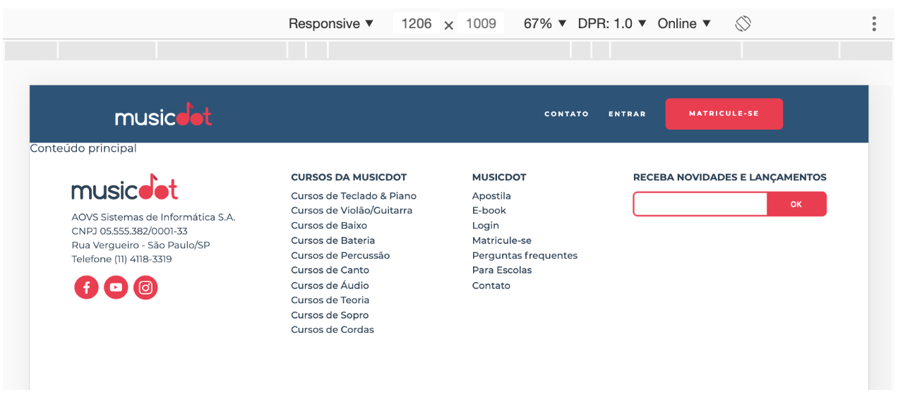

Agora inplementaremos o estilo do rodapé em telas maiores ainda, a partir de 1200px:

Note que a disposição dos elementos difere bastante do estilo anterior. Só para sobrescrever esse estilo anterior precisaríamos escrever bastanta código. Para evitar isso, podemos limitar o estilo anterior para funcionar apenas em telas a partir de 640px até telas de 1200px.